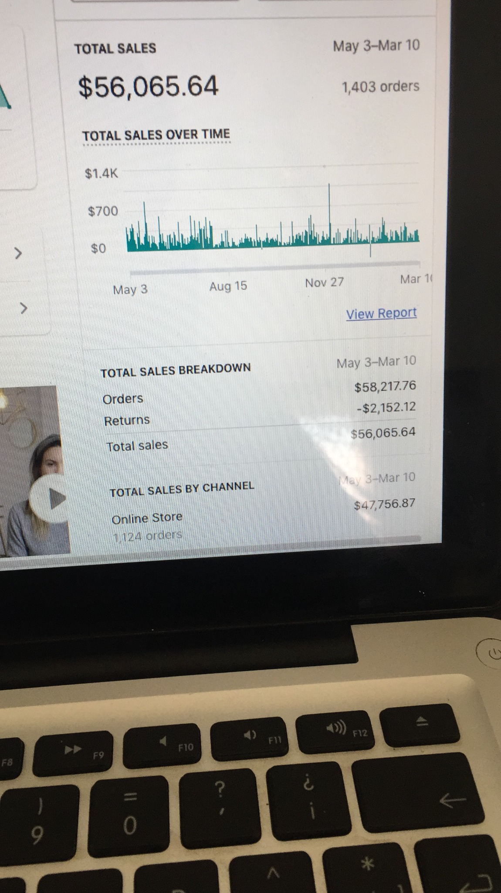

Map
Read the journey from the campaign to the store and the order.
A four-store Etsy and Shopify portfolio, more than $200K in reported revenue and a reported 34% increase in average order value. The work connects acquisition, the store experience and repeat purchasing.
Book a meeting ↗Reported portfolio revenue
A store has to do more than attract a click. The offer, product information and checkout all shape the order, while lifecycle communication influences what happens after it. This portfolio brings those questions together across Etsy and Shopify.
Where does growth get lost between the first visit and the next purchase? Buying more traffic is only one part of the answer. Conversion, order value, acquisition cost and repeat behavior all change the commercial meaning of a campaign.
Connect paid acquisition and Google Shopping with store analytics, order value and lifecycle marketing. The four-store view helps keep attention on the whole customer journey rather than one isolated advertising metric.
A map of the work, from the first message to customer value.
Reach a relevant buyer
Make the offer clear
Reduce hesitation
Build a useful basket
Earn the next purchase
Each part of the journey needs a clear purpose. Here is how the priorities connect to the business question.
| Priority | Execution focus | What to look for |
|---|---|---|
| Acquisition & Shopping | Connect paid traffic and Google Shopping to the products and offers a buyer is looking for. | Does the campaign bring commercially relevant visitors? |
| Store experience | Read the path from the product page to checkout, with attention to clarity and customer questions. | Which part of the buying journey creates hesitation? |
| Order value | Consider average order value alongside the offer and the customer’s reasons to buy. | Does the basket support better economics without losing clarity? |
| Lifecycle & analytics | Connect order information and customer behavior to the next marketing decision. | What do repeat purchases, margin and acquisition cost add to the picture? |
The measurement questions below explain how I assess the work; they are not additional published results.
Read the journey from the campaign to the store and the order.
Identify which constraint deserves attention: acquisition, conversion or value.
Bring campaign, store and lifecycle decisions into the same plan.
Assess the revenue signal together with costs and customer quality.
The revenue and order-value figures below are reported in the supplied portfolio. The original dashboard photos provide additional reporting views, with their visible totals and periods preserved.
| Reporting view | Total sales shown | Orders shown |
|---|---|---|
| Sep 1 – Mar 10 | $109,691.46 | 2,912 |
| Jan 1 – Mar 26 | $96,732.31 | 2,474 |
| May 3 – Mar 10 | $56,065.64 | 1,403 |
| Nov 1 – Mar 10 | $21,254.81 | 507 |
Original reporting views. The periods may overlap; these totals are not added together or treated as one growth series.
A few snapshots from my e-commerce work. Open an image to inspect the original dashboard.
 View the original
View the original View the original
View the original
View the original View the original
View the originalEach image shows its own reporting view. Periods can overlap; these figures are not added together.
An ad makes a promise. The product page and checkout have to make that promise easy to evaluate.
Order value belongs beside acquisition cost and conversion when deciding how the business can grow.
Each reporting view has its own period and definition. Reading them carefully is more useful than adding them together.
I like understanding the offer, the customer and the decisions behind the numbers. Campaigns become more useful when they connect to the product experience and the commercial reality.
Book a meeting ↗Send me the product, the channels you are using and the number you want to move. I would rather understand the bottleneck first than sell you a generic package.
Book a meeting ↗